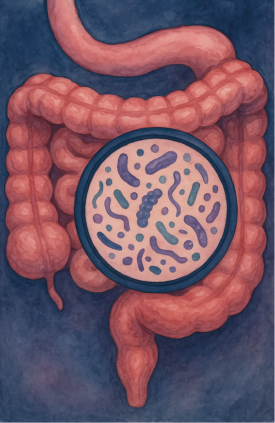

Descubre cómo actúan los psicobióticos
Los psicobióticos son organismos vivos que, cuando se ingieren en cantidades adecuadas, pueden beneficiar la salud mental a través de la interacción con el eje intestino-cerebro.

